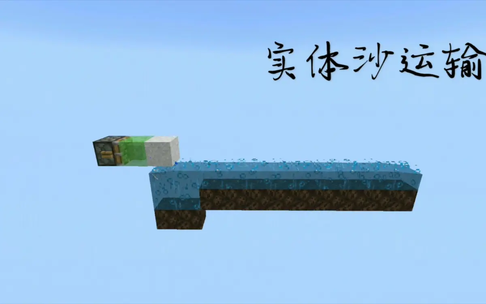

MCBE 【全物品】浅谈全物品 ep.4 水道的设计
写在前头（感谢）
这篇文章是面向对全物品有一定理解，打算动手做却还没有开始设计的人的，并非是面向零基础的
对于全物品所大量应用的双漏斗分类的原理，这里推荐 @smart_cuber 的视频。视频中展示的大部分分类单元在be都可以使用
 【minecraft红石扫盲】物品分类竟然有这么多知识点
B 站视频 »
【minecraft红石扫盲】物品分类竟然有这么多知识点
B 站视频 »
本文参考了 @flag易 于2016年在百度帖吧发表的帖子《全物品自动分类机的设计》（链接：https://tieba.baidu.com/p/4920562733）感谢 @flag易 的这篇帖子，给刚入生电的我极大的启蒙
因为现在有较多的物品的设计资料（包括je的和be的），以及前人留下了的全物品单片设计。所以本文的侧重点是从卡顿这一点来说的
在这里感谢 @_hhhxiao 开发的 trapdoor 插件，可以精确地测量出服务器内的卡顿
 [MCBE] 1.16~1.18服务插件Trapdoor介绍与教程
B 站视频 »
[MCBE] 1.16~1.18服务插件Trapdoor介绍与教程
B 站视频 »
本文是由我和同为天火的服务器成员 @Maple_枫槭 共同撰写的。由我负责主要内容，@Maple_枫槭 负责技术指导
（这里打一波广告，天火服务器交流群：1029028772）
本文大体会分为四部分，从“绪论”、“卡顿”、“全物品的组成”、“水道的设计”来系统地阐述全物品的设计方向。由于专栏的表现能力有限，这里只讨论设计方向。具体的设计之后会以视频的方式放出
目录
4、水道的设计
4.1、水道的设计目标
4.2、水道的总体设计
4.3、水道的细化设计
4.3.1、降低水道内掉落物实体的数量
4.3.2、降低掉落物实体在水道内的逗留时间
4.3.3、可用的部分转弯水道
4.4、水道的逻辑
4、第三章 水道的设计
------------------------------
4.1、水道的设计目标
水道最主要的目的是联通所有的分类漏斗，然后最重要的设计目标就是减少卡顿。这一点落到实处就是降低掉落物实体在水道内的数量和减少掉落物在水道内的逗留时间
4.2、水道的总体设计
水道常用单次水道和循环水道。其中各有优缺点
无论你全物品有多高的输入速度，在输入到分类单元时只能以单倍漏斗速度输入。所以不如以单倍漏斗速度输入，一次性分类完成，最后接全物品的仓库来回收无法分类的物品。单次水道有着低卡顿，高分类成功率，以及设计简单等优势
但显而易见的，如果一次性输入多种物品，那么分类倍速就是物品种数这么多了。况且即使只有一种物品输入，漏斗也存在23的空余可以压榨。为了压榨漏斗23的空余空间，可以略微提升物品的输入倍速。而面对大量物品的时候，就可以采取循环水道的设计来达成多次分类。以二倍速为例，因为分类单元是以单倍速工作，所以循环两圈就足以将所有物品分类完全。所以相应的，循环水道可以将输入速度提高至三倍到四倍漏斗速度，而循环次数视输入倍数而定。所以循环水道就是在卡顿与分类速度之间寻找平衡
4.3、水道的细化设计
4.3.1、降低水道内掉落物实体数量
为了具体阐述物品在水道内的数量，容我提出初中就学过的密度公式
V(物品的数量) = ρ[物品的密度（输入的倍速）] * S(输入点到目标点的距离)
这个是不考虑分类失败的情况。但很明显就可以看出来其中的重点了
1、降低物品的输入倍速
2、让物品到达目标分类单元的距离最近
由于单倍速漏斗速度过于感人（一组物品约25s，一盒物品约11min31s），现在常见的全物品都采用更高倍速的输入和循环水道。所以一般以卡顿和处理速度作为平衡来选择输入倍速
其次为了减少到目标点的距离，应该让输入点可以以最快的速度直达水道：
常见的全物品单片的水道高度不一，经常要考虑是送到最高点向下落和送到最低点往上传。经实测上传和下落的循环水道时长一致，所以可以考虑将物品送到最低点的水道然后逐级上传
因为全物品经常输入的物品量不一，如施工中的“普通方块”剩余较多，而像草、珊瑚等几乎没人去采集，即使有数量也不多，所以将经常输入的方块排在水道较前处，而将少见的方块排到水道较末端可以有效减少物品到达目标分类单元的平均距离
4.3.2、降低掉落物实体在水道内的逗留时间
降低物品在水道内的逗留时间也可以有效降低卡顿时长。这里选用速度公式来进行说明
t(逗留时间) = s(物品的路程) / v(物品的速度)
所以很明显的，降低逗留时间就是减少物品的路程和加快物品的速度
不考虑分类失败的情况下物品的路程已经在刚才讨论过了，这里来讨论分类失败的情况
常见的分类失败的原因有输入倍速过高，以及触发了漏斗bug等情况。分类失败的物品会进入循环水道进行二次分类、三次分类……所以很容易得出，物品真正进入漏斗所需要的路程就是S=（n - 1）* L + s
其中的n是分类所需要的循环次数，减掉的1是分类成功的那次循环，L就是循环水道的长度，s是输入点到目标分类单元的距离
根据物品排布，输入点到目标单元的距离是固定的。而循环次数则依据于输入速度，也是相对固定的。那么唯一可以降低总路程的，就只有循环水道的长度了
我们不妨将水道分为“有用水道”和“无用水道”两类，有用水道即为分类单片或大宗分类内的水道，而无用水道则为分类单片或大宗分类外的水道，如转向水道，上传水道等等
有用水道的长度依据你单片的堆叠数，是一个固定的数值。这里以lin佬的五箱十漏斗单片为例，左右侧完整。单片内预留冰道十格，那么我堆叠十片就是10 * 10 = 100格，堆叠80片就是80 * 10 = 800格
那么唯一可以减少的，就是无用水道了
依据速度公式来看，减少物品逗留在无用水道的时间是
t(物品在无用水道的逗留时间) = s(无用水道的路程) / v(物品在无用水道的速度)
所以为了真正达到目标，依旧需要考虑到物品的速度
以光速船为例，光速船在水流内可以无限加速，但从未听说过光速物品。所以很容易想到物品在冰道内加速存在收尾速度。依据实测，物品在八格流动水的浮冰道内需要加速约32格（大约耗时94gt）后达到收尾速度0.41 b/gt（即9b / 22gt）。具体实测的速度数据我会放在本文最后的附录里，供大家参考
大多数三向布局的全物品其中一向的水道长约为41（这里以天火创造服的全物品框架最下面的一条水道为例，非16色），勉强超过收尾长度。所以依据物品在水道内加速的现状，增加长水道（非16色水道）的一格的收益是明显大于增加短水道（16色水道）一格的收益，而减少短水道的一格的收益也是远大于减少长水道一格的收益的
由于全物品水道设计大多采用直角转弯，即转弯会取消所有之前加速产生的速度累积。所以减少转弯次数是非常有必要的。常见的转弯限位有海龟蛋限位与箱子限位，都属于较为稳定的限位方式，但要注意不要做在区块边界处。蜜块限位会明显降低物品速度，磨石限位会有方向性问题，都不推荐使用
4.3.3、可用的的部分转弯水道
正在找 @Maple_枫槭 授权（

[mcbe]水道的艺术ep2-和你赌两个币，一定有你没看过的 B 站视频 »maple yyds
4.4、水道的逻辑
物品进入水道后往哪里走？什么时候走？走多长时间？时间到了之后往哪里走？水道并非没有逻辑，而执行这一逻辑的就是全物品的主控
物品进入全物品输入端，为了防止不可堆叠物品在水道内循环，我们首先需要让物品经过不可堆叠分离。分离出来的不可堆叠物品可能含有等待拆包的潜影盒，所以需要经过潜影盒分离，而非潜影盒的不可堆叠物品会直接送往全物品的仓库。潜影盒会进行拆包，因为拆包物品可能含有不可堆叠物品，所以需要进行不可堆叠分离。但是如果另立不可堆叠分离模块输入进水道的话可能会导致上游物品输入倍速不可控，所以送回输入端进行不可堆叠分离是最稳妥的选择。因为潜影盒的常用性，拆包后的潜影盒单独收纳。接下来是可堆叠物品。为了增加可堆叠物品的分类速度，可堆叠物品会经过一次预分类的限速进入水道。因为预分类的单次分类成功率在91%以上，所以可以采用单次水道
如果采用循环水道的话，因为循环水道一圈耗时四分钟，为了进行第二次循环需要经过缓存重置掉落物cd。而此时如果输入端也有输入，那么缓存和输入端将会同时向水道起点输入物品，导致输入倍速不可控。所以当缓存启用的时候需要停止输入端的输入，在缓存停止工作的时候释放输入端的缓存。并且要在输入端采用计时器来计算循环次数，当物品在水道内的循环次数足够的时候要释放水道内的物品
当水道释放物品的时候，也需要让输入端停止工作或限速至单倍速保证单次足以分类完全
参考资料
——《全物品自动分类机的设计》（https://tieba.baidu.com/p/4920562733）2016.12.30
感谢
感谢 网页链接 和 @Daisy_17 提供天火创造服并维护
感谢 @flag易 的文章提供红石以外的参考
感谢 @PRECHE_帕夏_ 参与全物品讨论
感谢 @_hhhxiao 提供的trapdoor插件可以精确测量卡顿
感谢 @origin_0110 提供的五箱十漏斗全物品单片
感谢 @bWFuanVzYWth 提供的五箱十漏斗全物品单片
感谢 @Padishah19 提供的完美五箱布局
写在最后（作者的碎碎念）
那么本文就在此告一段落了，待附录发布后会将部分文章进行订正与修改 _(:з」∠)_
感谢编辑 @Maple_枫槭 在我逼着看完一遍后 提供的订正与修改
百里之所以没打上链接是因为连稿件都删了找不到地址了
linlin yyds
新的一年在这里祝大家新年快乐！
新的一年linlin变成妹妹了吗